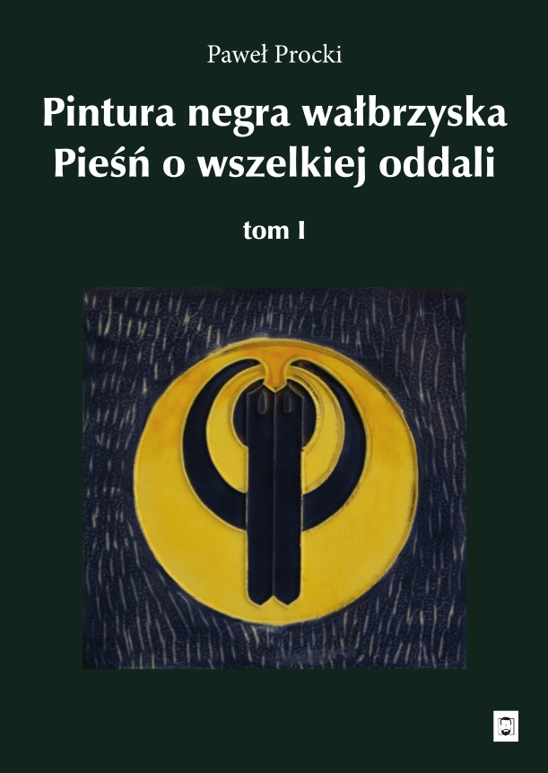
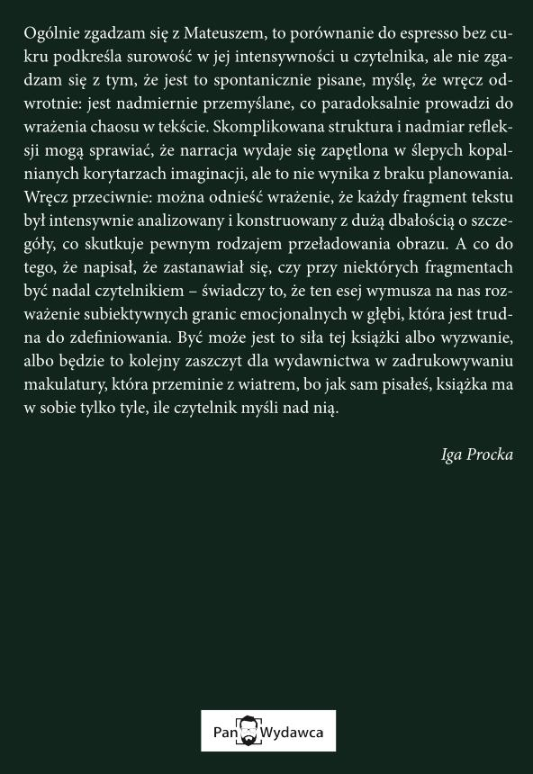

Pobrano: ... razy.
Czytaj PDF online Pobierz plik na dyskWyzwanie dla elit – nie autopromocja, ale dialog.

"1,5696370083594963 × 10⁻⁷ procent ludzkości przeczytało tę książkę, a mnie już nie będzie, gdy model językowy — jak co wieczór — poda mi tytuł czarno-białego filmu, z których większości nawet nie zdążyłem obejrzeć; kto więc mówi o kanonie kultury, rozmija się z nią tak samo jak ja, bo ona — ilekroć płonie świat — nie ocala tego, co uznane."
